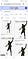

From bookable to booked

This idea that you have in mindis for sure a bookable idea. You just need tovstart writing it and if you wrap it with a beautiful cover and a introductory text it will be already a minimum publishable book that you can share with people to see how thry interact with it. These signal you get from this MPB will help you go from a bookabble idea into a booked one.
Book as a container of ideas still matters a lot go book an idea and share it with yhe world of course it will help if you learn how ideas spread.
